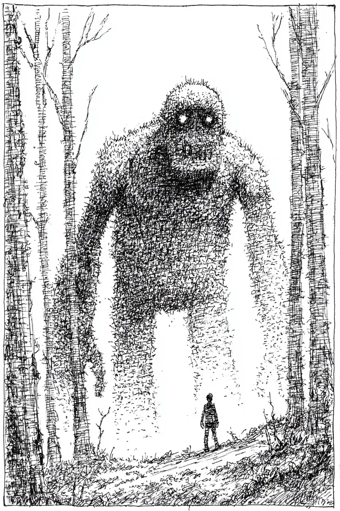

괴물은 자작나무 숲 사이에, 마치 세상이 그 모습을 보는 법을 잊어버린 존재처럼 서 있었다.
[The monster stood between the birch trees like something the world had forgotten how to see.]
리오가 그것을 발견한 것은 화요일이었다. 이끼와 흙으로 뒤덮인 3층 높이의 거체는, 대륙이 이동하듯 느리게 숨을 내쉬었다.
[Leo found it on a Tuesday. Three stories of moss and earth, breathing slow as continents shift.]
수 세기 빗물에 닳아 매끄러워진 옅은 빛의 돌 같은 눈동자. 포니테일을 찰랑이며 찢어지는 듯한 음악을 이어버드 밖으로 흘리던 한 조깅하는 사람이 손이 닿을 만큼 가까이 지나갔다. 그녀는 아무것도 보지 못했다.
[Eyes like pale stones worn smooth by centuries of rain. A jogger passed close enough to touch it, ponytail bobbing, earbuds leaking tinny music. She saw nothing.]
리오의 가방이 바닥에 툭 떨어졌다.
[Leo’s backpack hit the ground.]
거인의 머리가 기울어졌다. 마치 거대한 삼나무가 바람의 존재를 알아차린 듯이.
[The giant’s head tilted—a redwood acknowledging wind.]
“안녕.” 리오가 속삭였다.
[”Hello,” Leo whispered.]
소리 없이 이해가 전해졌다. 귀에 와닿는 단어들이 아니라, 가슴 속에서 피어나는 의미였다. 드디어. 누군가. 너무 오랫동안 혼자였어.
[Understanding arrived without sound. Not words pressing into his ears but meaning blooming behind his ribs. Finally. Someone. Alone so long.]
리오가 손을 들었다. 거인도 그를 따라 했다. 거인의 한쪽 손바닥이, 마치 움직이기로 결심한 언덕 비탈처럼 10월의 공기 속을 뚫고 솟아올랐다.
[Leo lifted his hand. The giant mirrored him, one palm rising through the October air like a hillside deciding to move.]
✱
“저 동아리 들었어요.” 수요일에 리오가 엄마에게 말했다. “방과 후에 하는 건데. 음, 환경 뭐 그런 거예요.”
[”I joined a club,” Leo told his mother on Wednesday. “After school. It’s for, um, environmental stuff.”]
엄마는 놀란 듯, 기쁜 듯 핸드폰에서 고개를 들었다. “정말 잘됐다, 아들. 친구들도 사귀겠네.”
[She looked up from her phone, surprised. Pleased. “That’s wonderful, honey. You’ll make friends.”]
거짓말은 입안에서 쇠 맛이 났다. 하지만 뭐라고 말할 수 있겠는가? 괴물을 만났어요. 저를 진정으로 봐준 유일한 존재예요.
[The lie tasted like copper. But what could he say? I found a monster and it’s the only thing that’s ever really seen me.]
그는 목요일에도, 금요일에도 돌아왔다. 방과 후 매일.
[He came back Thursday. Friday. Every day after school.]
거인은 수 세기를 기다려왔다. 사람들의 시선이 세상의 가장자리에 닿는 법을 알던 시절을, 특정 혈통에 ‘보는’ 재능이 진하게 흐르던 시절을 기억했다. 그 재능은 희미해져 거의 사라지다시피 했다. 이제 리오만이 남았다.
[The giant had been waiting centuries. It remembered when people knew how to look at the world’s edges, when the gift of seeing ran thick in certain bloodlines. That gift had thinned to almost nothing. Now there was only Leo.]
리오는 이야기했다. 거인은 그 거대한 존재 전체로 귀를 기울였다. 점심시간이면 구내식당의 형광등 소리와 흩어지는 웃음소리에 가슴이 답답해져 화장실 칸에 숨는 것에 대해. 인포머셜 방송을 보다 잠드는 엄마의 푸른빛이 감도는 지친 얼굴에 대해. 한 달에 한 번, 어쩌다 운이 좋아야만 걸려오는 아빠의 전화에 대해.
[Leo talked. The giant listened with its entire massive being. About bathroom stalls during lunch because the cafeteria’s fluorescent hum and scattered laughter made his chest tight. About his mother falling asleep to infomercials, her face blue-lit and exhausted. About his father’s phone calls that came monthly, sometimes, if Leo was something other than unlucky.]
리오가 거인의 다리에 손바닥을 대자, 이끼에서는 대지가 품을 수 있는 모든 좋은 기운이 느껴졌다. 마침내 어떤 존재에게 중요한 사람이 된 것 같은 기분이었다.
[When Leo pressed his palm against the giant’s leg, the moss felt like every good thing earth could be. Like finally mattering to something.]
“엄마는 내가 친구들을 사귀고 있는 줄 알아요.” 금요일에 그가 말했다. 그리고 곧바로 말하지 않았더라면 좋았을 거라고 후회했다. 거인은 아무 말도 하지 않았지만, 리오는 거인의 관심이 다른 데로 옮겨가는 것을 느꼈다. 그는 이곳에 인간 세상의 죄책감을 끌고 들어온 것이다.
[”My mom thinks I’m making friends,” he said on Friday, and immediately wished he hadn’t. The giant said nothing, but Leo felt its attention shift. He’d brought his human-world guilt into this place.]
✱
수학 시간, 리오의 손이 이상해 보였다.
[During math class, Leo’s hand looked wrong.]
그는 손을 들어 형광등 불빛 아래에서 돌려보았다. 피부가 옅어진 것 같았다. 마치 누군가 그의 살에 ‘거리감’을 섞어 넣은 것처럼. 손바닥을 통해 아래에 있는 책상이 보였다. 나뭇결, 칼로 새긴 이니셜, 오래되어 굳어버린 껌 한 덩어리.
[He held it up, turning it under the fluorescent lights. The skin seemed diluted, as if someone had mixed his flesh with distance. Through his palm he could see his desk underneath—wood grain, carved initials, a glob of ancient gum.]
그날 저녁 엄마가 그의 이마를 짚어보았다. “몸이 차갑네.”
[That evening his mother touched his forehead. “You feel cold.”]
엄마의 손은 그에게 용광로처럼 뜨겁게 느껴졌다. 어쩌면 그 자신이 소년이라기보다 11월의 공기에 더 가까운 존재가 되어버린 탓일지도 몰랐다.
[Her hand was a furnace against him, or he’d become something closer to November air than boy.]
“그냥 동아리 일 때문에 피곤해서 그래요.” 그가 말했다. 또 다른 거짓말이었다.
[”Just tired from the club stuff,” he said. Another lie.]
욕실 거울 속 그의 모습이 바람 앞의 촛불처럼 흔들렸다.
[In the bathroom mirror his reflection flickered like a candle in wind.]
✱
토요일 아침은 빛깔도 없이 희미하게 밝아왔다.
[Saturday morning came colorless and thin.]
숲으로 걸어가는 리오의 다리는 마치 빌려온 것 같았다. 바람은 이제 그에게 부딪히는 대신, 빛이 오래된 유리를 통과하듯 그의 몸을 꿰뚫고 지나갔다.
[Leo’s legs felt borrowed as he walked to the forest. The wind moved through him now instead of against him, the way light passes through old glass.]
거인은 기다리고 있었다.
[The giant waited.]
“나한테 무슨 일이 일어나고 있는 거야?”
[”What’s happening to me?”]
거인은 리오의 얼굴과 눈높이가 수평이 될 때까지 몸을 낮췄다. 너무 가까워서 이끼 속에 자라는 작은 것들인 지의류, 작은 양치식물들, 그리고 함께 뒤엉킨 부패와 생명의 구조물이 보일 정도였다.
[It lowered itself until its face hung level with his, close enough that Leo could see the tiny things growing in its moss—lichen, small ferns, the architecture of decay and life tangled together.]
나눔. 하나됨. 함께함.
[Sharing. Becoming. Together.]
“나... 사라지고 있어.”
[”I’m disappearing.”]
합쳐져 있다. 결코 분리되지 않는다. 절대 혼자가 아니다.
[Joining. Never separate. Never alone.]
거인이 손바닥을 내밀었다. 리오는 올라탔다. 결심해서가 아니라, 그저 그렇게 했다. 그는 솟아올랐다. 껍질이 벗겨지는 자작나무 꼭대기를 지나, 동네 지붕들을 지나, 자신의 삶 속에서 스스로를 유령처럼 느끼게 했던 모든 것을 지나쳐서.
[The giant offered its palm. Leo climbed on—not deciding to, just doing it. Up he rose: past the birch crowns with their peeling bark, past the neighborhood rooflines, past everything that had ever made him feel like a ghost in his own life.]
이 높이에서 보니 그의 집은 인형의 집 가구처럼 보였다. 창문 하나가 빛나고 있었다. 엄마는 곧 일어날 테고, 1인분의 아침을 차릴 테고, 어쩌면 그 환경 동아리가 진짜인지, 아니면 아들이 혼자가 되는 새로운 방법을 찾아낸 것인지 궁금해할지도 몰랐다.
[From this height his house looked like dollhouse furniture. One window glowed. His mother would be waking soon, would make breakfast for one, would maybe wonder if the environmental club was real or if her son had found some new way to be alone.]
머물러, 그 느낌이 말했다. 언제나 품 안에. 언제나 시선 안에. 결코 무의미하지 않게.
[Stay, the feeling said. Always held. Always seen. Never nothing.]
리오는 자신의 손을 내려다보았다. 이제는 겨우 형체만 암시할 뿐, 그저 손가락이라는 관념만 남아있었다. 그의 심장 박동은 마치 다른 누군가, 멀리 떨어진 다른 몸 안의 다른 소년의 것처럼 들렸다.
[Leo looked at his hands. Barely suggestions now, just the idea of fingers. His heartbeat sounded like it belonged to someone else, some other boy in some other body far away.]
거인의 손가락이 그를 감쌌다. 부드럽게. 거스를 수 없이.
[The giant’s fingers curled around him. Gentle. Inevitable.]
제발, 그것이 말했다. 그 한마디에 담긴 외로움은 교회보다 더 오래된 것이었다. 머물러.
[Please, it said, and the loneliness in that single word was older than churches. Stay.]
유령처럼 변해가는 가슴을 통해 리오는 거인의 손바닥을, 그 아래 자신의 집을, 그리고 자신이 했던 거짓말이 영원한 진실이 되어가는 것을 볼 수 있었다.
[Through the ghost of his chest, Leo could see the giant’s palm, could see his house below, could see the lie he’d told becoming permanent truth.]
환경 동아리 같은 건 없었다. 집으로 돌아가는 일도 없을 것이다. 그저 부재, 텅 빈 방을 발견할 엄마, 그리고 수년간 이어질 의문만이 남을 뿐.
[No environmental club. No coming home. Just absence, and his mother finding his room empty, and years of wondering.]
거인이 그에게 거짓말을 하라고 한 것은 아니었다. 하지만 머무른다는 것은 그 거짓말이 현실이 되도록 내버려 둔다는 의미였다.
[The giant hadn’t asked him to lie. But staying meant letting the lie become real.]
엄마가 병원, 경찰서, 영안실에 전화를 돌리게 된다는 의미였다. 잠든 엄마의 얼굴이 ‘알지 못함’의 무게를 짊어지지 않고는 결코 깨어날 수 없게 된다는 의미였다.
[Meant his mother calling hospitals, police, morgues. Meant her sleeping face never waking without the weight of not-knowing.]
“미안해.” 리오가 말했다.
[”I’m sorry,” Leo said.]
그는 뛰어내렸다.
[He jumped.]
✱
3층 높이에서의 추락은 영원처럼 이어졌다.
[The fall lasted three stories and forever.]
그는 무게가 없었다. 숨결보다, 숨결이라는 관념보다도 가벼웠다. 땅은 물처럼 부드럽게 다가왔다.
[He weighed nothing—less than breath, less than the idea of breath. The ground arrived gentle as water.]
그 순간 거인이 놓아주었다.
[Then the giant let go.]
모든 것이 한꺼번에 밀려들었다. 무게. 밀도. 리오라는 존재가 세상에서 차지하던 특정한 공간감.
[Everything flooded back at once. Weight. Density. The specific Leo-shaped space he occupied in the world.]
그의 몸이 단단해지는 법을 다시 기억해냈고, 그 기억은 고통 그 자체였다. 그는 숨을 헉 들이마셨다. 그의 손바닥이 피부를 찢을 만큼 단단한 흙바닥에 부딪혔다.
[His body remembered how to be solid and the remembering was agony. He gasped. His palms hit earth that was hard enough to break skin.]
부서지기 쉬운 나뭇잎 가장자리가 그를 베었다. 추위가 뼈를 뚫고 전기처럼 쏘아댔다.
[Leaves cut him with their brittle edges. Cold shot through his bones like electricity.]
위에서 거인이, 마치 대륙이 슬퍼하는 듯한 소리를 냈다.
[Above, the giant made a sound like continents grieving.]
리오는 비틀거리며 일어났다. 달렸다. 다리가 후들거렸지만 버텨주었다. 그의 뒤로, 리오가 ‘거의’ 존재할 뻔했던 그 공간을 채우며 거인의 외로움이 확장되었다.
[Leo staggered up. Ran. His legs shook but held. Behind him the giant’s loneliness expanded to fill the space where Leo had almost been.]
폐가 인간 특유의 타는 듯한 고통을 느낄 때까지, 평범한 인간의 눈물로 시야가 흐려질 때까지, 그리고 마침내 앞마당 잔디밭에 쓰러져 숨을 헐떡일 때까지 그는 달렸다.
[He ran until his lungs burned their particular human burn, until his vision blurred with regular human tears, until he collapsed on his front lawn, gasping.]
단단하게. 여기. 실재했다.
[Solid. Here. Real.]
엄마가 그곳에서 그를 발견했다.
[His mother found him there.]
엄마는 그의 이름을 비명처럼 불렀고, 그 소리는 세상 모든 이의 간절한 기도를 한데 모은 것처럼 들렸다. 그녀는 그를 안으로 끌어당겨, 자신의 라벤더향 세제 냄새가 나는 담요로 감쌌고, 떨리는 손으로 911에 전화했다.
[She screamed his name and it sounded like every prayer anyone had ever meant. She pulled him inside, wrapped him in the afghan that smelled like her lavender detergent, called 911 with shaking hands.]
병원에서는: 탈수, 저체온증 가능성, 경과 관찰을 위해 하룻밤 입원.
[At the hospital: dehydration, possible hypothermia, keep him overnight for observation.]
엄마는 그의 손을 잡았다. 가슴이 아릴 정도로 따뜻하고, 단단하고, 실재하는 손이었다.
[His mother held his hand—warm and solid and real in a way that made his chest hurt.]
“엄마 여기 있어.” 그녀가 말했다. “바로 여기.”
[”I’m here,” she said. “I’m right here.”]
리오는 그녀에게 거짓말에 대해 말하고 싶었다. 존재하지 않는 환경 동아리에 대해. 존재했던 괴물에 대해. 대신 그는 엄마의 손을 꽉 잡았다.
[Leo wanted to tell her about the lie. About the environmental club that didn’t exist. About the monster that did. Instead he squeezed her hand.]
“동아리 같은 거 없어요.” 그가 속삭였다. “죄송해요.”
[”There’s no club,” he whispered. “I’m sorry.”]
엄마는 혼란스러워 보이다가, 이내 무언가 깨달은 표정을 지었다. “알아, 아들. 괜찮아. 네가 지금 여기 있잖아. 그것만 중요해.”
[She looked confused, then understanding crossed her face. “I know, honey. It’s okay. You’re here now. That’s all that matters.”]
엄마는 알고 있었다. 어쩌면 처음부터 내내.
[She’d known. Maybe the whole time.]
엄마는 여전히 그의 손을 잡은 채 침대 옆 의자에서 잠이 들었다.
[She fell asleep in the chair beside his bed, her hand still holding his.]
리오는 여전히 외로웠다. 여전히 구내식당과 교실에서 투명인간이 되곤 했다. 여전히 아빠의 부재가 메아리치는 집에서 살고 있었다.
[Leo was still lonely. Still the kind of invisible that happened in cafeterias and classrooms. Still living in a house that echoed with his father’s absence.]
하지만 그는 여기에 있었다. 완전하게, 아플 정도로, 명확하게 ‘여기’에.
[But he was here. Completely, achingly, specifically here.]
자작나무 숲 사이, 거대한 무언가가 고개를 돌리고 다시 기다림 속으로 가라앉았다. 어쩌면 또다시 수 세기를.
[In the forest between the birch trees, something massive turned its face away and settled back into waiting. Centuries more, maybe.]
세상이 그 존재를 믿는 법을 잊어버린 것을 볼 수 있는 눈을 가진 다음 사람이 태어날 때까지.
[Until the next person was born with eyes that could see what the world had forgotten to believe in.]
그것은 홀로 기다릴 것이다.
[It would wait alone.]
기다림에는 익숙했다.
[It had practice.]